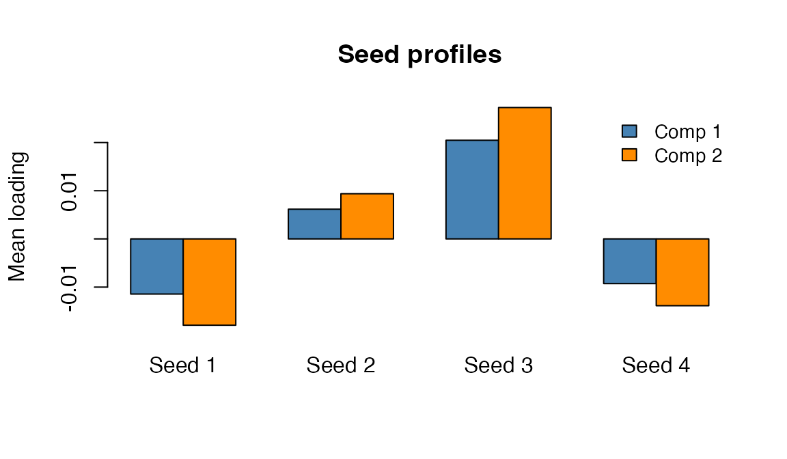
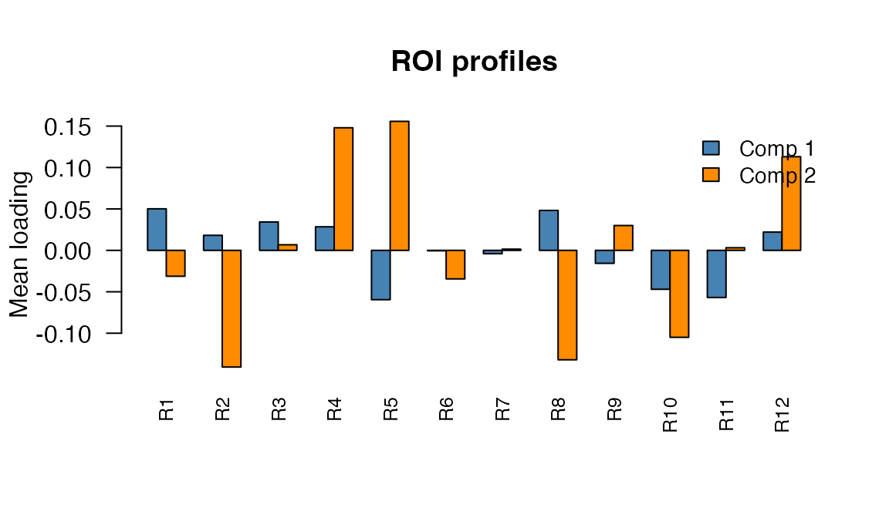
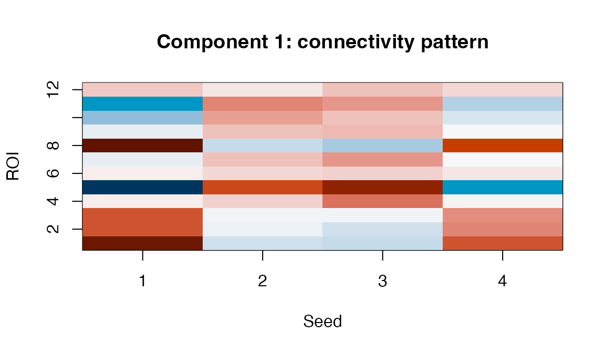
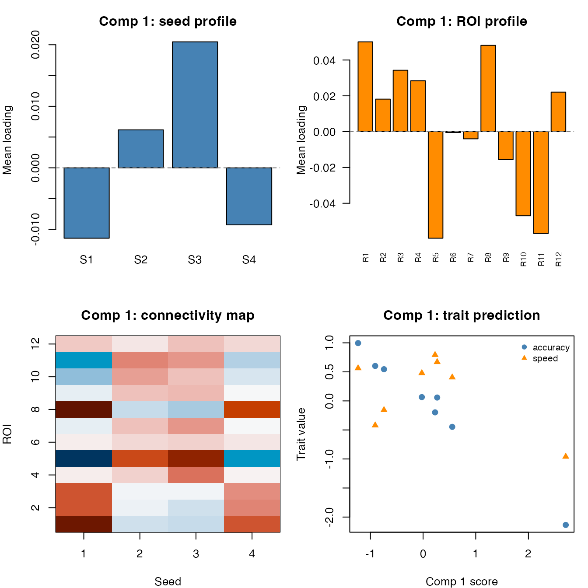
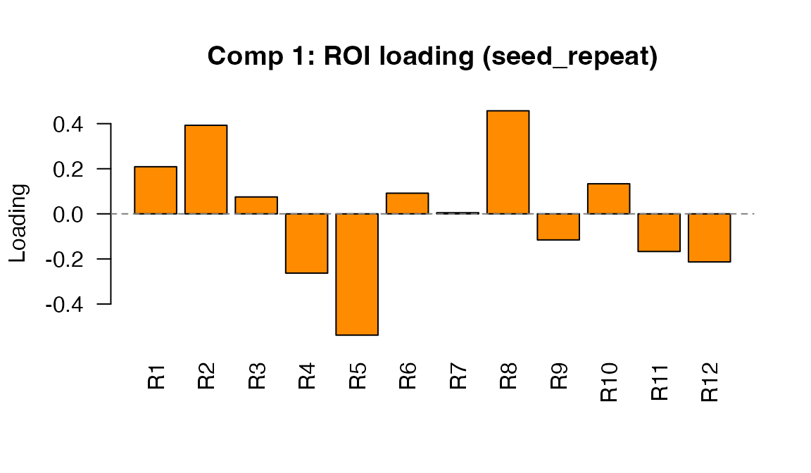
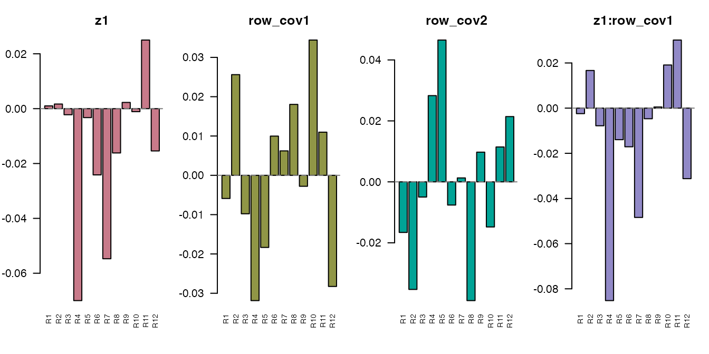
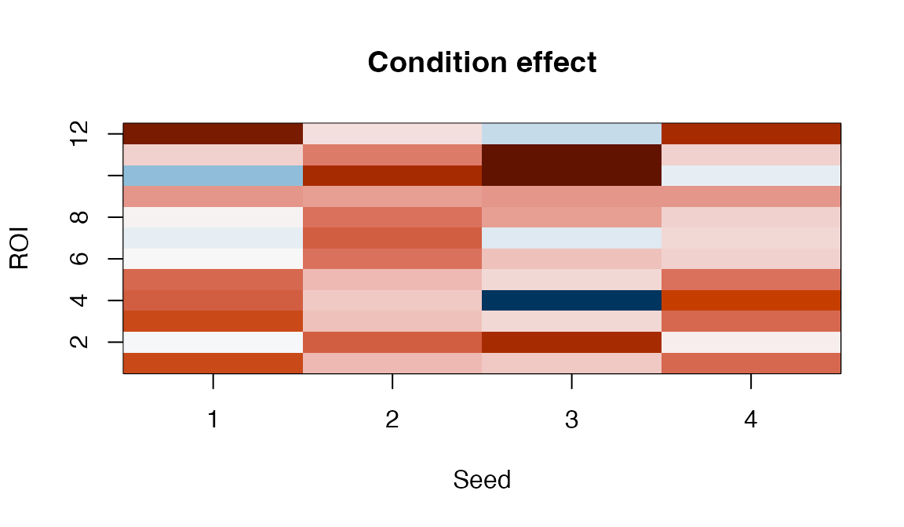
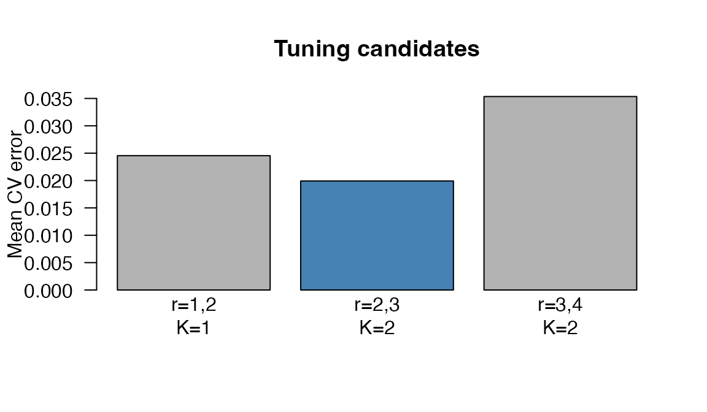

Bilinear Mixed Models for Repeated Connectivity Matrices
Source:vignettes/bilinear_mixed.Rmd
bilinear_mixed.RmdThe problem
You have a collection of connectivity matrices — one per scan, session, or trial — collected from multiple subjects under different experimental conditions. You want to answer questions like:
- Which connectivity patterns differ across conditions?
- Which patterns characterize individual subjects?
- Can subject-level traits (age, performance) be predicted from connectivity?
Standard approaches either vectorize the matrices (losing structure)
or analyze them one edge at a time (losing the multivariate picture).
bilinear_mixed() keeps the matrix structure intact by
learning low-rank row and column bases, then fitting a mixed model in
that compressed space.
Quick start
We’ll simulate a small dataset: 8 subjects, each scanned under 3 conditions, producing 4-seed x 12-ROI connectivity matrices. A linear condition effect and subject-specific latent traits drive the signal.
set.seed(42)
n_subject <- 8
n_repeat <- 3
n_seed <- 4
n_roi <- 12
subject <- rep(paste0("S", seq_len(n_subject)), each = n_repeat)
condition <- rep(seq_len(n_repeat), times = n_subject)Each element of data_list is a 4 x 12 matrix:
Fit the model with supervised trait prediction:
fit <- bilinear_mixed(
data = data_list,
subject = subject,
z = z,
y = y_traits,
mode = "seed_axis",
r_seed = 2,
r_roi = 3,
k_subject = 2,
lambda_y = 1.0,
max_iter = 30
)
fit
#> Bilinear Repeated-Measures Mixed Model
#> mode: seed_axis
#> observations: 24 | subjects: 8 | rows: 4 | cols: 12
#> ranks (seed, roi): (2, 3) | subject latent K: 2
#> connectivity type: cross
#> axis head iterations: 30The model has learned a 2 x 3 compressed core for each observation, estimated subject scores, recovered a condition-effect map, and linked the latent space to subject traits.
How it works
bilinear_mixed() decomposes each observed matrix
as:
where:
| Symbol | Meaning | Dimensions |
|---|---|---|
| Seed (row) basis | n_seed x r_seed | |
| ROI (column) basis | n_roi x r_roi | |
| Grand-mean core | r_seed x r_roi (vectorized) | |
| Design effect coefficients | (r_seed * r_roi) x n_design | |
| Subject loading matrix | (r_seed * r_roi) x K | |
| Subject scores (random effects) | K x 1 per subject | |
| Supervision map (optional) | K x n_traits |
The bases and are learned from the pooled covariance of the data, then the model alternates between updating , , , and in a regularized alternating least squares (ALS) loop.
The three analysis modes
The mode argument controls how the model treats the row
(seed) dimension. This is the most important modelling choice, and the
right answer depends on whether your rows are exchangeable observations
or structured entities.
seed_axis: rows as a matrix axis
This is the default and most common mode. Each observed matrix is projected onto both bases simultaneously to form a compressed core vector:
The mixed model is then fit on these core vectors:
Use seed_axis when: your matrices represent bivariate relationships between two sets of entities (seeds and ROIs, genes and conditions, etc.) and you want to model the full matrix pattern as a single observation.
fit_axis <- bilinear_mixed(
data = data_list,
subject = subject,
z = z,
mode = "seed_axis",
r_seed = 2,
r_roi = 3,
k_subject = 2,
max_iter = 30
)What you get back: the axis slot
contains seed-by-ROI effect maps that can be visualized as heatmaps.
Each trait_maps[[k]] is a full 4 x 12 matrix, and each
design_maps[[j]] shows how the
-th
design variable modulates the connectivity surface.
seed_repeat: rows as repeated observations
In this mode, each row of a matrix is treated as a separate observation of the same ROI profile. Instead of compressing both axes, only the column (ROI) axis is projected:
where indexes rows within matrix . This creates a “long-form” dataset with n_obs x n_seed rows, each of dimension r_roi. The mixed model is then:
where
is a design vector that can include the repeat-level design
,
row-level covariates from row_design, and their
interactions.
Use seed_repeat when: your rows represent entities with their own properties (e.g., seed regions with spatial coordinates, voxels with tissue-type labels), and you want those properties to enter as covariates.
row_cov <- data.frame(
position = seq(-1, 1, length.out = n_seed),
hemi = rep(c(-1, 1), length.out = n_seed)
)
fit_rep <- bilinear_mixed(
data = data_list,
subject = subject,
z = z,
row_design = row_cov,
mode = "seed_repeat",
r_roi = 3,
k_subject = 2,
max_iter = 30
)What you get back: the repeat_head slot
contains ROI-space vectors rather than full matrices. The design is
expanded to include row covariates and their interactions with the
condition:
fit_rep$repeat_head$design_names
#> [1] "z1" "row_cov1" "row_cov2" "z1:row_cov1" "z1:row_cov2"Each roi_trait_maps[[k]] is a vector of length n_roi
showing how each ROI loads on the
-th
subject component:
length(fit_rep$repeat_head$roi_trait_maps[[1]])
#> [1] 12both: fit both heads with a shared ROI basis
This mode runs both analyses using the same ROI basis , giving you complementary views: the seed_axis head captures the full seed-by-ROI pattern, while the seed_repeat head reveals how row-level covariates modulate the ROI profile.
Use both when: you want the full matrix picture and you have meaningful row covariates.
fit_both <- bilinear_mixed(
data = data_list,
subject = subject,
z = z,
row_design = row_cov,
mode = "both",
r_seed = 2,
r_roi = 3,
k_subject = 2,
max_iter = 30
)The shared ROI basis ensures the two heads are comparable:
all.equal(fit_both$axis$R, fit_both$repeat_head$R)
#> [1] TRUEInterpreting components across spaces
A single latent component has a footprint in three spaces: seed space (which rows it activates), ROI space (which columns it activates), and trait space (which subject-level outcomes it predicts). Understanding a component means seeing all three views together.
We’ll use the supervised fit for this section:
fit_sup <- bilinear_mixed(
data = data_list,
subject = subject,
z = z,
y = y_traits,
mode = "seed_axis",
r_seed = 2,
r_roi = 3,
k_subject = 2,
lambda_y = 1.0,
max_iter = 30
)Extracting the building blocks
Every component is defined by four objects stored in the fitted model. All outputs carry proper names — subject labels on scores, component labels on columns, trait names on the supervision map:
# Bases learned from the data
L <- fit_sup$axis$L # seed basis: n_seed x r_seed
R <- fit_sup$axis$R # ROI basis: n_roi x r_roi
# Per-component quantities
W <- fit_sup$axis$W # loading matrix: (r_seed*r_roi) x K
t_scores <- fit_sup$axis$t_scores # subject scores: n_subject x K
A <- fit_sup$axis$A # supervision map: K x n_traitsNote how everything is labeled:
head(t_scores) # rows = subjects, cols = comp1, comp2
#> comp1 comp2
#> S1 -0.74220283 0.3029316
#> S2 0.22759622 -0.9031354
#> S3 2.70865789 0.3953440
#> S4 0.26760870 -0.6852734
#> S5 0.55348601 -0.5373639
#> S6 -0.02364459 -0.4909562
A # rows = components, cols = trait names
#> accuracy speed
#> comp1 -0.7721786 -0.2173421
#> comp2 -0.1092141 -0.9947347The loading matrix
is the key to interpretation. Each column W[, k] is a
vectorized r_seed x r_roi core, and the model
pre-computes its back-projection to the original space as
trait_maps:
Seed-space and ROI-space profiles
To understand where a component acts, the model pre-computes marginal profiles by averaging each trait map across the opposite axis:
# Pre-computed: no manual derivation needed
seed_profiles <- fit_sup$axis$seed_profiles # n_seed x K
roi_profiles <- fit_sup$axis$roi_profiles # n_roi x K
dim(seed_profiles)
#> [1] 4 2
dim(roi_profiles)
#> [1] 12 2The seed profile tells you which rows (seeds) are most involved in the component; the ROI profile tells you which columns (ROIs) are most involved.

Seed-space profiles: average connectivity contribution of each seed for components 1 (blue) and 2 (orange).

ROI-space profiles: average connectivity contribution of each ROI for components 1 and 2.
The full connectivity map
The trait map itself is the most informative view — it shows exactly which seed-ROI pairs are modulated by the component:
tmap1 <- fit_sup$axis$trait_maps[[1]]
Component 1 trait map: the full seed x ROI connectivity pattern associated with individual differences on this latent dimension.
Subject scores in latent space
Subject scores position each individual along the components.
Subjects with high scores on component
express the connectivity pattern in trait_maps[[k]] more
strongly:
# Subject scores come pre-labeled with subject IDs and component names
t_scores <- fit_sup$axis$t_scores
t_scores
#> comp1 comp2
#> S1 -0.74220283 0.3029316
#> S2 0.22759622 -0.9031354
#> S3 2.70865789 0.3953440
#> S4 0.26760870 -0.6852734
#> S5 0.55348601 -0.5373639
#> S6 -0.02364459 -0.4909562
#> S7 -0.90929140 0.5859824
#> S8 -1.23393342 -0.2131423Subject positions in the 2-D latent space. Proximity reflects similarity in connectivity patterns after removing condition effects.
Trait-space weights
The supervision map (K x n_traits) links subject scores to external measures. Each column of shows how a trait loads onto the latent components:
# A comes pre-labeled: rows = components, columns = trait names
A <- fit_sup$axis$A
A
#> accuracy speed
#> comp1 -0.7721786 -0.2173421
#> comp2 -0.1092141 -0.9947347Read this row-by-row: the “accuracy” column shows how each component predicts accuracy; “speed” shows the same for speed. Or read column-wise: comp1 loads positively on accuracy but negatively on speed.
Putting it all together
The most powerful interpretation comes from viewing all four spaces in a single figure. For each component we show: the seed profile, the ROI profile, the full connectivity map, and the trait weights.

Component 1 across all four spaces. Top-left: which seeds are involved. Top-right: which ROIs are involved. Bottom-left: the full connectivity map. Bottom-right: how this component predicts traits, with subject scores along the x-axis.
You can generate this panel for each component. Here is the code to produce it for an arbitrary component :
k <- 1 # change to inspect other components
par(mfrow = c(2, 2), mar = c(4, 4, 3, 1))
# 1. Seed profile — which rows matter? (pre-computed)
barplot(fit_sup$axis$seed_profiles[, k],
col = "steelblue", main = paste("Comp", k, "- seed profile"))
# 2. ROI profile — which columns matter? (pre-computed)
barplot(fit_sup$axis$roi_profiles[, k],
col = "darkorange", main = paste("Comp", k, "- ROI profile"))
# 3. Full connectivity map
tmap <- fit_sup$axis$trait_maps[[k]]
image(seq_len(nrow(tmap)), seq_len(ncol(tmap)), tmap,
col = hcl.colors(64, "RdBu", rev = TRUE),
main = paste("Comp", k, "- connectivity"))
# 4. Trait prediction
plot(fit_sup$axis$t_scores[, k], y_traits[, 1], pch = 19,
xlab = paste("Comp", k, "score"), ylab = "Trait",
main = paste("Comp", k, "- traits"))Interpreting the seed_repeat head
In seed_repeat mode, there is no full seed-by-ROI trait
map. Instead, the per-component footprint is a single ROI-space vector.
The model also pre-computes an roi_profiles matrix (n_roi x
K), analogous to the axis head’s profiles:
fit_rep2 <- bilinear_mixed(
data = data_list,
subject = subject,
z = z,
y = y_traits,
row_design = row_cov,
mode = "seed_repeat",
r_roi = 3,
k_subject = 2,
lambda_y = 1.0,
max_iter = 30
)
# Pre-computed ROI profiles matrix
dim(fit_rep2$repeat_head$roi_profiles)
#> [1] 12 2
# Or access individual component vectors
roi_vec <- fit_rep2$repeat_head$roi_trait_maps[["comp1"]]
length(roi_vec)
#> [1] 12
Component 1 ROI loading in seed_repeat mode. Each bar shows how strongly an ROI is associated with individual differences on this latent dimension.
The design effect maps similarly live in ROI space. Each element of
roi_design_maps shows how a design variable (condition, row
covariate, or interaction) affects the ROI profile:
names(fit_rep2$repeat_head$roi_design_maps)
#> [1] "z1" "row_cov1" "row_cov2" "z1:row_cov1" "z1:row_cov2"
Design effect vectors in ROI space. The condition effect (z1) and its interactions with row covariates each produce a different ROI-space pattern.
Comparing modes: what does each give you?
| What you want | seed_axis | seed_repeat |
|---|---|---|
| Full seed x ROI maps |
trait_maps[["comp1"]],
design_maps[[j]]
|
Not available |
| Per-seed profiles |
seed_profiles (pre-computed, n_seed x
K) |
Not available |
| Per-ROI profiles |
roi_profiles (pre-computed, n_roi x
K) |
roi_profiles (pre-computed, n_roi x
K) |
| ROI component vectors | Derive via roi_profiles[, k]
|
roi_trait_maps[["comp1"]] directly |
| Row-covariate effects | Not supported |
roi_design_maps (main + interactions) |
| Subject scores |
axis$t_scores (labeled) |
repeat_head$t_scores (labeled) |
| Trait prediction |
axis$A (labeled) |
repeat_head$A (labeled) |
Inspecting design effects
The fitted model back-projects design coefficients into the original
space. In seed_axis mode, each
design_maps[[j]] is a full seed x ROI matrix:

Condition effect map. Each cell shows how connectivity between a seed-ROI pair changes with the experimental condition.
Positive values indicate seed-ROI pairs whose connectivity increases with condition; negative values indicate decreases.
Symmetric connectivity
When your matrices are symmetric ROI x ROI correlation or covariance
matrices, set connectivity_type = "symmetric". The model
then forces a shared basis for rows and columns
(),
halving the basis parameters:
fit_sym <- bilinear_mixed(
data = sym_data,
subject = subject,
z = z,
mode = "seed_axis",
connectivity_type = "symmetric",
r_seed = 3,
r_roi = 3,
k_subject = 2,
max_iter = 25
)
fit_sym$connectivity_type
#> [1] "symmetric"With connectivity_type = "auto" (the default), the model
detects symmetry automatically by checking whether all matrices are
equal to their transpose within sym_tol.
When symmetric, the trait maps are symmetric too — the node-level profile is just the row (or column) mean:
tmap_sym <- fit_sym$axis$trait_maps[[1]]
node_profile <- rowMeans(tmap_sym) # = colMeans since symmetric
node_profile
#> [1] -0.015793504 -0.032067382 -0.002930459 0.022385909 0.033966006
#> [6] 0.002536994 -0.033387983 -0.017927297 -0.022917548 0.001420995The easy API
For most analyses, bilinear_mixed_easy() picks sensible
defaults automatically. You just specify a complexity profile:
fit_easy <- bilinear_mixed_easy(
data = data_list,
subject = subject,
z = z,
y = y_traits,
profile = "fast"
)
fit_easy
#> Bilinear Repeated-Measures Mixed Model
#> mode: seed_axis
#> observations: 24 | subjects: 8 | rows: 4 | cols: 12
#> ranks (seed, roi): (2, 2) | subject latent K: 2
#> connectivity type: cross
#> axis head iterations: 50The three profiles control how aggressively the model captures variance:
| Profile | Variance target | Speed |
|---|---|---|
"fast" |
75% | Fastest — good for exploration |
"balanced" |
85% | Default for most analyses |
"adaptive" |
92% | Thorough — higher ranks, more regularization |
Behind the scenes, bilinear_mixed_recommend() inspects
your data to set ranks, regularization strengths, and mode:
rec <- bilinear_mixed_recommend(
data = data_list,
subject = subject,
z = z,
y = y_traits,
profile = "balanced"
)
str(rec[c("mode", "r_seed", "r_roi", "k_subject", "lambda_t")])
#> List of 5
#> $ mode : chr "seed_axis"
#> $ r_seed : int 2
#> $ r_roi : int 4
#> $ k_subject: int 2
#> $ lambda_t : num 0.281Tuning via cross-validation
When you need the best configuration,
bilinear_mixed_tune() performs subject-blocked
cross-validation over a grid of key parameters:
tuned <- bilinear_mixed_tune(
data = data_list,
subject = subject,
z = z,
y = y_traits,
metric = "reconstruction",
n_folds = 2,
grid = data.frame(
r_seed = c(1, 2, 3),
r_roi = c(2, 3, 4),
k_subject = c(1, 2, 2),
lambda_y = c(0.5, 1, 1)
)
)
tuned
#> Bilinear Mixed Tuning
#> metric: reconstruction
#> best score: 0.01992
#> best params:
#> - r_seed = 2
#> - r_roi = 3
#> - k_subject = 2
#> - lambda_y = 1
#>
#> Top candidates:
#> candidate r_seed r_roi k_subject lambda_y score n_success
#> 2 2 3 2 1.0 0.01991592 2
#> 1 1 2 1 0.5 0.02454530 2
#> 3 3 4 2 1.0 0.03535052 2
CV reconstruction error by candidate. Lower is better.
The best candidate is automatically refit on the full dataset and
stored in tuned$fit.
For supervised problems with trait data, use
metric = "trait_r2" to select the configuration that best
predicts subject traits:
tuned_trait <- bilinear_mixed_tune(
data = data_list,
subject = subject,
z = z,
y = y_traits,
metric = "trait_r2"
)Convergence
The ALS algorithm tracks a penalized objective at each iteration. You can inspect convergence to check that the model has stabilized:
obj <- fit$axis$objective_trace
length(obj)
#> [1] 30Objective function over ALS iterations. Rapid initial descent followed by a plateau indicates convergence.
If the trace hasn’t plateaued, increase max_iter. If the
model oscillates, increase the ridge penalties (lambda_w,
lambda_t).
Summary of key functions
| Function | Purpose |
|---|---|
bilinear_mixed() |
Full control over all parameters |
bilinear_mixed_easy() |
Automatic defaults with optional tuning |
bilinear_mixed_recommend() |
Data-adaptive parameter suggestions |
bilinear_mixed_tune() |
Subject-blocked CV for rank and regularization |
Next steps
-
?bilinear_mixed— full parameter documentation -
vignette("mfa")— Multiple Factor Analysis for multi-block integration -
vignette("penalized_mfa")— sparse MFA with penalties -
vignette("covstatis")— STATIS analysis for covariance matrices